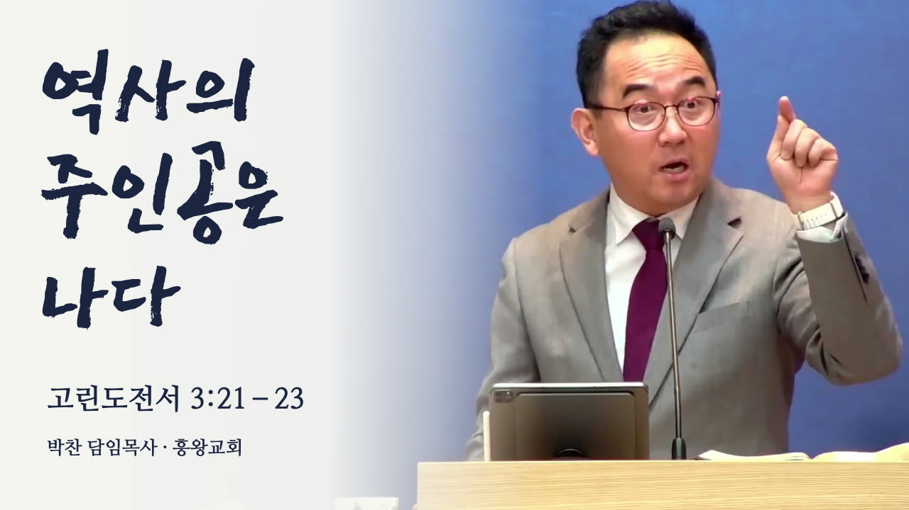

역사의 주인공은 나다
이 설교로 쇼츠 6편을 만들었어요. 영상을 보시고 올릴 3편을 골라 주세요.
고른 뒤 아래쪽의 ‘선택 내용 복사’를 누르고 담당자에게 카카오톡 등으로 붙여 넣어 보내 주세요. 이 페이지에는 선택이 저장되거나 자동으로 전달되지 않아요.
쇼츠는 설교의 일부 문장을 골라 이어 붙인 영상이에요. 맨 앞에는 뒤에 나오는 문장을 한 번 먼저 보여 줘요. 각 영상 아래의 ‘설교 위치’는 아래 설교 영상의 시간이에요.
자막은 자동 받아쓰기를 다듬은 것이라 표현이 실제 말씀과 조금 다를 수 있어요. 고치고 싶은 말이나 빼고 싶은 부분이 있으면 아래에 적어 주세요.
설교 전체 영상 (38분 6초)
미리보기용 저화질이에요. 10분씩 나눠 올렸고 다음 부분이 이어서 재생돼요.
설교 영상 썸네일
